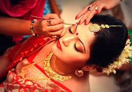
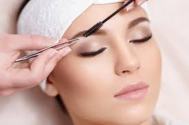

Why Choose Student Makeup?
As a student, your makeup should enhance your natural beauty — not overpower it. At Sultana Artistry, I specialize in soft, age-appropriate, and long-lasting makeup that’s perfect for:
- School functions & prize distributions
- Dance and drama competitions
- College welcome events
- Modeling & photoshoots
- Proms and farewell parties
I use only dermatologically tested, non-comedogenic products that are gentle on young skin and won’t clog pores — because beauty should never come at the cost of health.
Popular Student Looks
From subtle day glam to elegant evening styles — I customize every look to suit your outfit, skin tone, and occasion.

Natural Day Glow
Light foundation, soft blush, and nude lips — perfect for school events.

Dewy Fresh Glow
Hydrated skin, subtle shimmer, and pinky tones for a youthful vibe.

Soft Smokey Eyes
Perfect for stage performances — dramatic but age-appropriate.
Makeup Tips for Students
- Less is more: Avoid heavy foundation and bold lips daily.
- Skin prep is key: Always cleanse and moisturize before makeup.
- Use sunscreen: Even under makeup — protection matters!
- Remove makeup at night: Never sleep with makeup on.
- Carry blotting papers: To manage shine during long events.
I also offer personalized skin & makeup consultations for students — ask me during your session!
Or contact me to book a session for your next event!